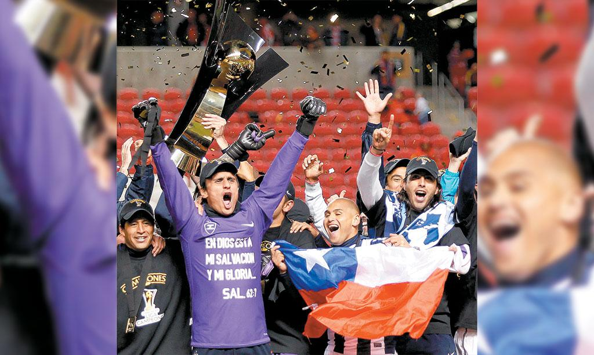

El primer titulo de Concacaf:
El primer campeonato de los Rayados en la liga de campeones fue en el año del 2010-11, cuando en la final vencieron a Real Salt Lake de los Estados Unidos por marcador global de 3-2. Tras su triunfo, los de Monterrey se clasificaron al primer Mundial de Clubes en 2011, donde no contaron con el mejor papel, cayendo eliminados en penales contra el Kashiwa Reysol de Japón en cuartos de final, y conformándose con el quinto puesto de la competición.